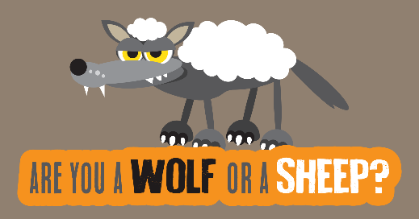

Are You a Sheep?

Are you a Sheep?
- When making important choices, do you?
A - Research and make the best choice suited for you
B - Ask for someone else to make it - When listening to music, do you?
A - Listen to a wide range of music
B - Listen to only radio music - When picking a book to read, do you?
A - Read a bit from the book before buying it
B - Only read a book that is a best seller - When planning a travel trip, do you?
A - Choose a place that interest you
B - Choose a place that is popular - Finally, will you take this quiz with a pinch of salt?
A - Yes
B - Who would eat salt after a quiz?
If you answered with mostly Bs, here are some of our pages that can help you start on your leadership skills:
If you answer with mostly As, here are some of our pages that can help you improve on your leadership skills: